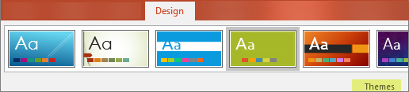

Slide Master
When you want all your slides to contain the same fonts and images (such as logos), you can make those changes in one place—the Slide Master, and they'll be applied to all your slides. To open Slide Master view, on the View tab, select Slide Master:
The master slide is the top slide in the thumbnail pane on the left side of the window. The related layout masters appear just below the slide master (as in this picture from PowerPoint for macOS):
1 Slide master
2 Layout masters
When you edit the slide master, all slides that are based on that master will contain those changes. However, the majority of changes that you make will most likely be layout masters related to the master.
When you make changes to layout masters and the slide master in Slide Master view, other people working in your presentation (in Normal view) can’t accidentally delete or edit what you’ve done. Conversely, if you're working in Normal view and find that you're unable to edit an element on a slide (such as, "why can't I remove this picture?") it may be because the thing you're trying to change is defined on the slide master or a layout master. To edit that thing, you must switch to Slide Master view.
Note: It's a good idea to edit your slide master and layout masters before you start to create individual slides. That way, all the slides that you add to your presentation are based on your custom edits. If you edit the slide master or layout masters after you create individual slides, you’ll need to reapply the changed layouts to the existing slides in your presentation in Normal view.
Themes
A theme is a palette of colors, fonts, and special effects (like shadows, reflections, 3-D effects, and more) that complement one another. A skilled designer created each theme in PowerPoint. We make those pre-designed themes available to you on the Design tab in Normal view.
Every theme you use in your presentation includes a slide master and a related set of layouts. If you use more than one theme in your presentation, you’ll have more than one slide master and multiple sets of layouts.

Slide Layouts
You change and manage slide layouts in Slide Master view. Every theme has a several slide layouts. You choose the layouts that best match your slide content; some are better for text and some are better for graphics.
In Normal view, you’ll apply the layouts to your slides (shown below).

Each slide layout is set up differently — with different types of placeholders in different locations on each layout.
Every slide master has a related slide layout called Title Slide Layout, and each theme arranges the text and other object placeholders for that layout differently, with different colors, fonts and effects. The following pictures contrast the title slide layouts for two themes: first the Basis theme and then the Integral theme.
You can change anything about a layout to suit your needs. When you change a layout master and then go to Normal view, every slide you add after that time that's based on that layout will reflect the changed look of the layout. However, if there are existing slides in your presentation that are based on the prior version of the layout, you’ll need to reapply the layout to those slides.